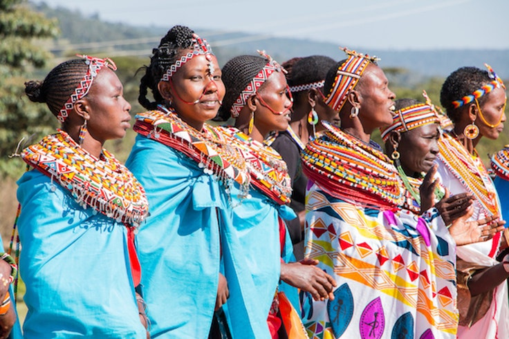
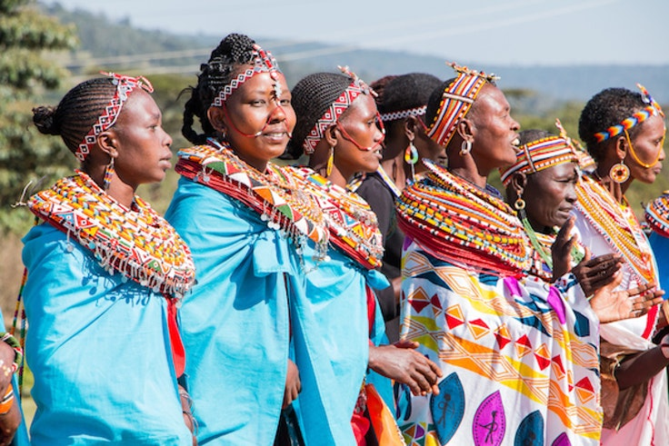

Maasai Mara National Reserve
Maasai Mara (Masai Mara) is situated in south-west Kenya and is one of Africa’s Greatest Wildlife Reserves. Together with the Serengeti National Park in Tanzania it forms Africa’s most diverse, incredible and most spectacular eco-systems and possibly the world’s top safari big game viewing eco-system.
Cultural practices of Kenya
Kenya is not a homogeneous country ethnicity wise. The make-up of Kenyans is primarily that of 13 ethnic groups with an additional 27 smaller groups. The majority of Kenyans belong to ‘Bantu’ tribes such as the Kikuyu, Luhya and Kamba. There are also the ‘Nilotic’ tribes such as the Luo, Kalenjin, Maasai and Turkana. The ‘Hamitic’ people include the Turkana, Rendille and Samburu. Around 13% of the population are of non-African descent, i.e. Indian, Arab and European.
Cultural practices of Kenya
Kenya is not a homogeneous country ethnicity wise. The make-up of Kenyans is primarily that of 13 ethnic groups with an additional 27 smaller groups. The majority of Kenyans belong to ‘Bantu’ tribes such as the Kikuyu, Luhya and Kamba. There are also the ‘Nilotic’ tribes such as the Luo, Kalenjin, Maasai and Turkana. The ‘Hamitic’ people include the Turkana, Rendille and Samburu. Around 13% of the population are of non-African descent, i.e. Indian, Arab and European.
 
